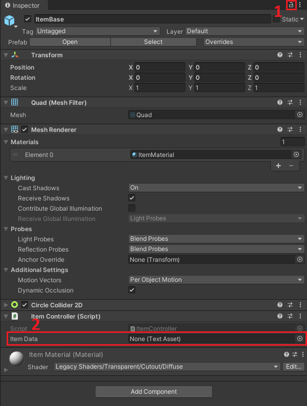

Obsługa przedmiotów
Dodawanie przedmiotu na mapę
Dodając przedmiot mamy dwie drogi postępowania - stworzenie przedmiotu od początku i podmienienie pliku metadanych, lub skopiowanie już istniejącej instancji. W przypadku drugiej ścieżki należy umieścić prefab "ItemBase" w świecie gry. Znajduje się on w katalogu Resources/Items/. Po utworzeniu i wybraniu z hierarchii ItemBase, w inspektorze powinien się pojawić taki widok:

Dobrym nawykiem przy pracy z przedmiotami będzie zablokowanie podglądu inspektora po przez naciśnięcie ikony kłódki (patrz AD. 1). Zablokuje to zmianę widoku w przypadku, gdy klikniemy na inny obiekt w drzewku projektu. Drugim polem (AD. 2) jest miejsce, gdzie podajemy plik z metadanymi danego przedmiotu. Pliki metadanowe powinny znajdować się pod ścieżką Resources/Items/<Nazwa przedmiotu>/<Nazwa przedmiotu>.json. Po wybraniu pliku z danymi, żeby zobaczyć zmiany w edytorze należy chociaż raz uruchomić "Play mode".
Deklarowanie nowego przedmiotu
Deklaracja przedmiotu jest dość prosta. W ścieżce Resources/Items/ należy stworzyć podkatalog z nazwą przedmiotu, a w nim plik .json. Jeśli przedmiot nazywa się xyz wtedy jego ścieżka powinna przybrać formę: Resources/Items/xyz/xyz.json. W pliku JSON, zadeklarować następującą strukturę pliku:
{
"IsStackable": true, // Określa czy przedmiot łączy się z innymi przedmiotami tego samego rodzaju.
"Type": 0, // Typ przedmiotu - niestety musi być podawany liczbowo. Wymagane, aby API wiedziało jak obsłużyć dany przedmiot.
"Quantity": 1, // Ilość przedmiotu, który zostanie dodany do ekwipunku.
"Texture": "Items/xyz/xyz.png", // Tekstura, która zostanie ustawiona na przedmiocie.
"Name": "xyz" // Nazwa przedmiotu - przydatne, gdy API potrzebuje sprawdzić jaki przedmiot wpadł do ekwipunku. Jeśli nazwa przedmiotu nie zostanie podana, zostanie ustawiona nazwa pliku, skąd były pobierane metadane.
}
W obecnej wersji gry rozrózniamy 4 typy przedmiotów:
- Money - ID: 0
- PowerUp - ID: 1
- Ammunition - ID: 2
- Health - ID: 3
Ostatnim krokiem jest dodanie tekstury xyz.png do katalogu Items/xyz.